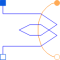

QuasiStaticAnalogWindingQuasi static single phase winding neglecting induced voltage |

|
Diagram
{kind=link}
Information
This information is part of the Modelica Standard Library maintained by the Modelica Association.
The single phase winding consists of a resistor, and a single phase electromagnetic coupling.
See also
SymmetricMultiPhaseWinding, Magnetic.FundamentalWave.BasicMachines.Components.SinglePhaseWinding, Magnetic.FundamentalWave.BasicMachines.Components.SymmetricMultiPhaseWinding
Parameters (7)
| useHeatPort |
Value: false Type: Boolean Description: Enable / disable (=fixed temperatures) thermal port |
|---|---|
| RRef |
Value: Type: Resistance (Ω) Description: Winding resistance per phase at TRef |
| TRef |
Value: Type: Temperature (K) Description: Reference temperature of winding |
| alpha20 |
Value: Type: LinearTemperatureCoefficient20 (¹/K) Description: Temperature coefficient of winding at 20 degC |
| alphaRef |
Value: Modelica.Electrical.Machines.Thermal.convertAlpha(alpha20, TRef, 293.15) Type: LinearTemperatureCoefficient (¹/K) |
| TOperational |
Value: Type: Temperature (K) Description: Operational temperature of winding |
| effectiveTurns |
Value: 1 Type: Real Description: Effective number of turns per phase |
Connectors (5)
| pin_p |
Type: PositivePin Description: Positive pin |
|
|---|---|---|
| pin_n |
Type: NegativePin Description: Negative pin |
|
| port_n |
Type: NegativeMagneticPort Description: Negative complex magnetic port |
|
| port_p |
Type: PositiveMagneticPort Description: Positive complex magnetic port |
|
| heatPortWinding |
Type: HeatPort_a Description: Heat ports of winding resistor |
Components (4)
| V_m |
Type: ComplexMagneticPotentialDifference Description: Complex magnetic potential difference |
|
|---|---|---|
| Phi |
Type: ComplexMagneticFlux Description: Complex magnetic flux |
|
| resistor |
Type: Resistor |
|
| electroMagneticConverter |
Used in Components (1)
|
Modelica.Magnetic.QuasiStatic.FundamentalWave.BasicMachines.SynchronousMachines
Electrical excited synchronous machine with optional damper cage |